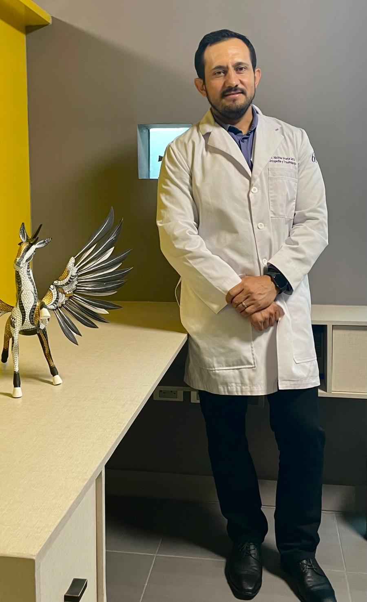
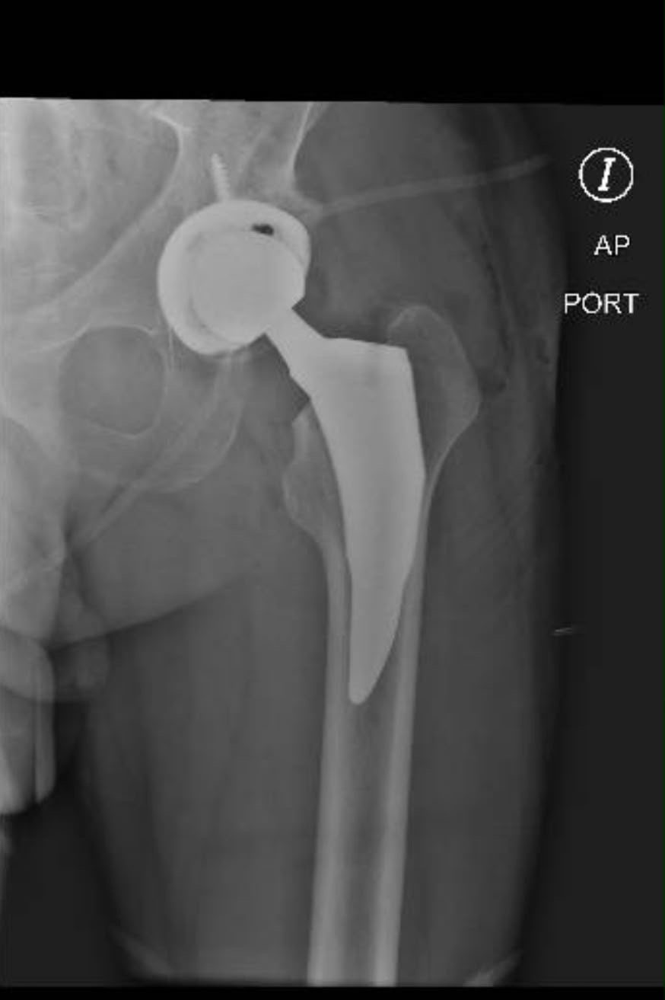
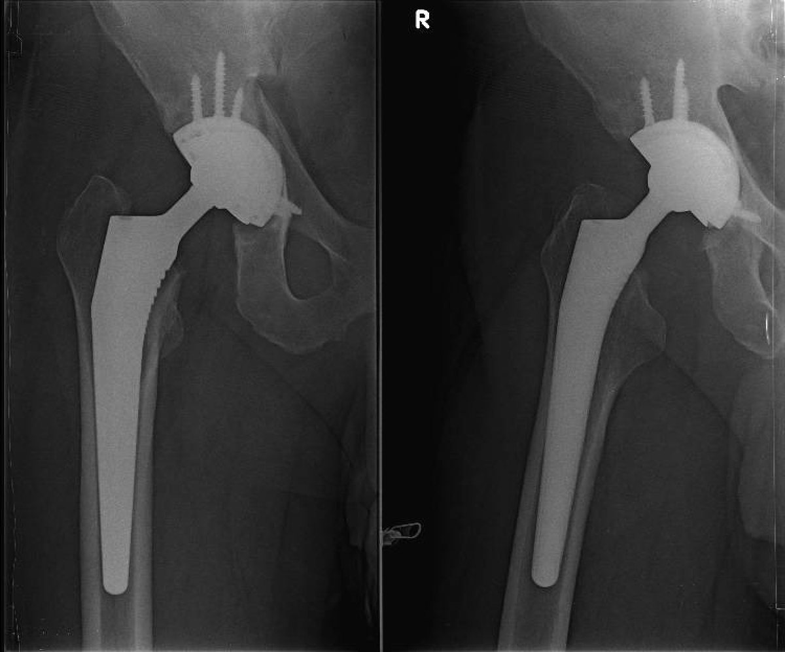
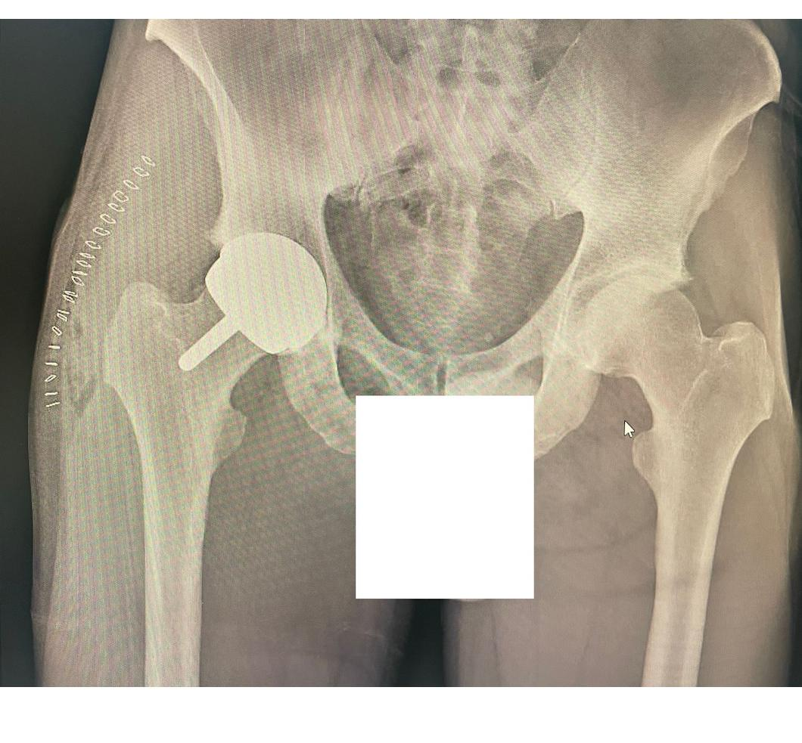
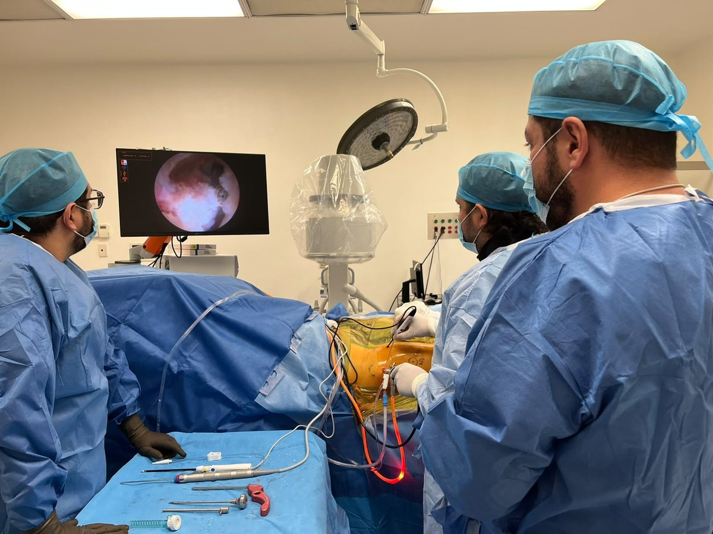
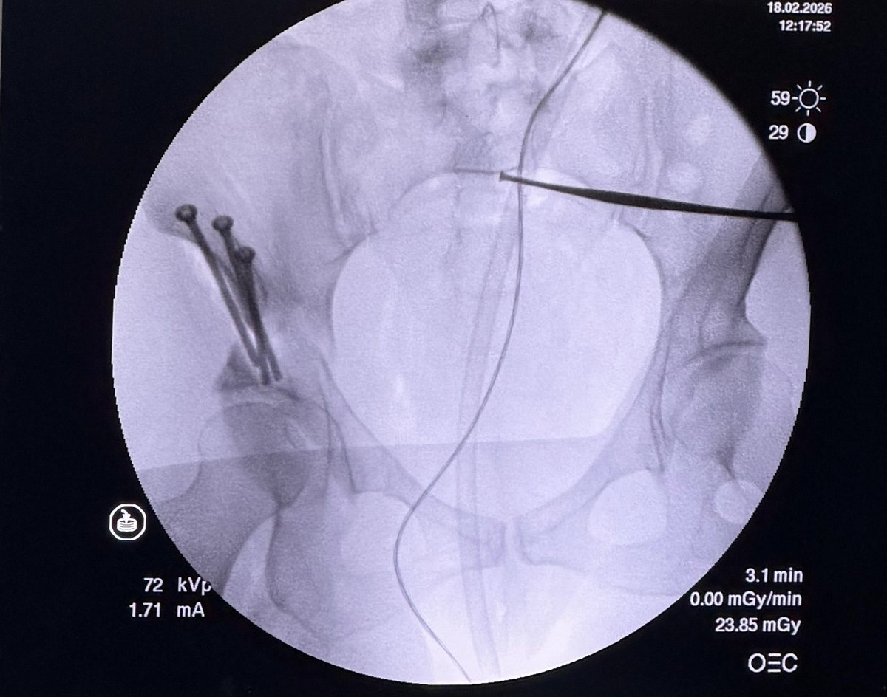

Preservación articular, artroscopia de cadera, prótesis primaria y de revisión, hip resurfacing y osteotomía periacetabular.
5.0 en Google · Cédula profesional 195320 · Consultorio en Christus Muguerza Del Parque

Da clic en cada procedimiento para ir directo a su descripción.
La prótesis total de cadera reemplaza superficies articulares dañadas por artrosis, necrosis, fracturas o secuelas de displasia. Objetivo: aliviar dolor, mejorar movilidad y recuperar funciones de la vida diaria.

Procedimiento para recambiar parcial o totalmente una prótesis previa. Suele ser más complejo por pérdida ósea, cicatriz y posible inestabilidad.

Reemplaza la superficie de la cabeza femoral y la copa acetabular preservando más hueso que una prótesis total. Indicada en pacientes jóvenes o muy activos con alta demanda funcional.

La selección de pacientes es clave; requiere hueso de buena calidad y evaluación individual.
Cirugía mínimamente invasiva que utiliza 2 a 4 portales pequeños para introducir cámara e instrumentos. Permite osteoplastia en pinzamiento (CAM/PINCER), reparación o reconstrucción del labrum y tratamiento de cartílago. Busca preservar la articulación y, en deportistas, facilita el retorno al nivel previo.

La osteotomía periacetabular es un procedimiento de preservación de cadera indicado principalmente en pacientes jóvenes con displasia acetabular sintomática. Consiste en realizar cortes controlados alrededor del acetábulo para reorientarlo y mejorar la cobertura de la cabeza femoral.

Médico especialista en Ortopedia y Traumatología con enfoque en cirugía de cadera, preservación articular y procedimientos reconstructivos. Formación nacional e internacional en artroscopia de cadera, cirugía de preservación, artroplastia primaria y de revisión.
Técnica Quirúrgica: Reconstrucción capsular artroscópica con malla dermal más reconstrucción labral segmentaria con tibial anterior en microinestabilidad recurrente de cadera posquirúrgica. Revista Española de Artroscopia y Cirugía Articular. Vol. 30. Fasc.1. Núm. 78. Abril 2023. L. Pérez‑Carro, N. D. Urueta García, et al.
Consultorio: Christus Muguerza Del Parque
Dirección: Paseo Simón Bolívar 1000, interior 307-309, Col. Centro, 31000 Chihuahua, Chih.
Teléfono consultorio: 614 479 4215
WhatsApp citas: 614 215 7019
Ver ubicación y cómo llegar en Google Maps
Atención con cita previa.
| Lunes a jueves | 15:00 – 20:00 |
| Viernes | 10:00 – 13:00 |
| Sábado y domingo | Cerrado |
WhatsApp: lunes a sábado, 8:00 – 20:00 hrs.
Las cirugías se realizan en Christus Muguerza Del Parque, Christus Muguerza Hospital Juventud, Sanatorio Moderno y Clínica del Centro.